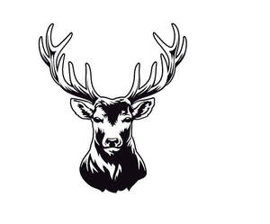

Trade Mark Journal No.2025/031 1 August 2025
UK00004228764 3 July 2025 (18,21,43)

- Class 18
- Leather and imitations of leather; leather, un-worked or semi-worked; processed or unprocessed leather and hides, artificial leather, cowhide, lining leather; animal skins, hides; bags; leather bags, bags of synthetic materials; luggage and carrying bags; trunks; travelling bags and cases; duffel bags; bags for campers; handbags; shoulder bags; cases; satchels; briefcases; suitcases; rucksacks and backpacks; wash bags [not fitted]; beach bags; bumbags; sports bags; casual bags; shopping bags; tool bags; messenger bags; document bags; leather shoulder belts; luggage tags made of leather; pocket wallets; wallets; purses; toilet bags; beauty cases; vanity cases; attaché cases; music cases; carriers for suits, for shirts and for dresses; tie cases; notecases; credit card cases and holders; business card cases; hat boxes of leather; leather placemats; accessories for clothing and fashion, namely, purses, handbags, wallets, clutch bags, tote bags; key cases; pocket wallet holders (in the nature of wallets) for credit cards or visiting cards, toilet bags (not fitted), travelling bags; leather straps (not for clothing); furniture covering of leather; umbrellas and parasols; bags for umbrellas; walking sticks; shooting sticks; whips, harness and saddlery; harness straps and fittings; leather leashes; collars, straps, leashes and clothing for animals; horse blankets; dog coats; coats for cats; cosmetics and make-up bags; .
- Class 21
- Household or kitchen utensils and containers; cookware and tableware, except forks, knives and spoons; unworked or semi-worked glass, except building glass; glassware, porcelain and earthenware; plant pots and candlesticks; household accessories, namely, chopping boards for kitchen use, household containers for foods, saucepans, cake stands; dish stands; bowls, bottles sold empty; waste and refuse bins for household use; laundry bins, toothbrush holders, pet feeding and drinking bowls, planters for domestic gardening, laundry hampers; household accessories, namely, ornaments of china, decorative wall plaques of china, porcelain or glass; ornaments and figurines [statuettes] of porcelain, ceramic, earthenware or glass; clothes pegs; baskets for washing; buckets; waste paper and rubbish bins; cake moulds; abrasive pads for kitchen purposes; abrasive sponges for scrubbing the skin; animal bristles [brushware]; ; baking mats; basins [bowls]; basins [receptacles]; baskets for domestic use; basting spoons, for kitchen use; beaters, non-electric; beer mugs; blenders, non-electric, for household purposes; boot jacks; boot trees [stretchers]; bottle gourds; bottle openers; bottles; boxes of glass; bread baskets, domestic; bread bins; bread boards; buckets made of woven fabrics; butter-dish covers; butter dishes; buttonhooks; cake moulds; candle extinguishers; candle rings; candlesticks; candy boxes; cauldrons; ceramics for household purposes; ; china ornaments; chopsticks; cleaning instruments, hand-operated; closures for pot lids; ; clothes-pegs; coasters, not of paper and other than table linen; cocktail stirrers; coffee services [tableware]; coffeepots, non-electric; confectioners' decorating bags [pastry bags]; containers for household or kitchen use; cookery mould; cookie [biscuit] cutters; cookie jars; cooking utensils, non-electric; cooler bags; cooler boxes; corkscrews; cosmetic utensils; crockery; cruet sets for oil and vinegar; crystal [glassware]; cups; cups of paper or plastic; currycombs; cutting boards for the kitchen; dish covers; dishes; disposable table plates; drinking glasses; drinking horns; drinking straws; drinking troughs; drinking vessels; ; dustbins; dusting cloths; earthenware saucepans; egg cups; enamelled glass; fitted picnic baskets, including dishes; flasks; whisky flasks; flower-pot covers, not of paper; flower pots; food cooling devices, containing heat exchange fluids, for household purposes; fruit cups; fruit presses, non-electric, for household purposes; frying pans; funnels; gardening gloves; garlic presses [kitchen utensils]; glass bowls; glass bulbs [receptacles]; glass caps; glass flasks [containers]; glass jars [carboys]; glass [receptacles]; glass wool other than for insulation; gloves for household purposes; ; graters [household utensils]; grill supports; grills [cooking utensils]; heat-insulated containers; heat insulated containers for beverages; heaters for feeding bottles, non-electric; holders for flowers and plants [flower arranging]; horse brushes; hot pots, not electrically heated; ice cube moulds; ice pails; isothermic bags; jugs; kitchen containers; kitchen mixers, non-electric; kitchen utensils; knife rests for the table; large-toothed combs for the hair; lazy susans; liqueur sets; lunch boxes; majolica; mangers for animals; menu card holders; mills for domestic purposes, hand-operated; mixing spoons [kitchen utensils]; moulds [kitchen utensils]; mosaics of glass, not for building; mugs; napkin holders; napkin rings; non-electric portable coldboxes; noodle machines, hand-operated; opal glass; opaline glass; pails; painted glassware; paper plates; pastry cutters; pepper mills, hand-operated; pepper pots; pie servers; piggy banks; porcelain ware; pot lids; pots; pottery; powdered glass for decoration; refrigerating bottles; rolling pins, domestic; roses for watering cans; salad bowls; salt cellars; ; saucers; scoops [tableware]; services [dishes]; shakers; shoe horns; shoe trees [stretchers]; sieves [household utensils]; sifters [household utensils]; signboards of porcelain or glass; soap boxes; soap dispensers; soap holders; soup bowls; spatulas [kitchen utensils]; spice sets; sponge holders; sponges for household purposes; spouts; sprinklers; statues of porcelain, ceramic, earthenware or glass; statuettes of porcelain, ceramic, earthenware or glass; ; sugar bowls; syringes for watering flowers and plants; table plates; tableware, other than knives, forks and spoons; tankards; tea infusers; tea balls; tea caddies; tea cosies; tea services [tableware]; teapots; thermally insulated containers for food; tie presses; towel rails and rings; trays for domestic purposes; trays for domestic purposes, of paper; trivets [table utensils]; utensils for household purposes; vacuum bottles; vases; vegetable dishes; vessels of metal for making ices and iced drinks; waffle irons, non-electric; waste paper baskets; watering cans; whisks, non-electric, for household purposes; wine tasters [siphons]; ; works of art of porcelain, ceramic, earthenware or glass; candelabras; candle jars [holders]; chamois leather for cleaning; cocktail shakers; basting brushes; bulb basters; cosmetic spatulas; crushers for kitchen use, non-electric; demijohns; drinking bottles for sports; earthenware/crockery; hip flasks; insulating flasks/vacuum bottles; kitchen grinders, non-electric; barbecue mitts; kitchen mitts; pipettes; pot holders; tortilla presses, non-electric [kitchen utensils]; wine pourers; parts and fittings for all the aforesaid goods.
- Class 43
- Services for providing food and drink; catering services; restaurant and café services; coffee shop services; coffee bar services; bars; public houses; wine bars; take away services; provision of food and/or drink for consumption on and/or off premises; members club services; rental of rooms for holding functions, events, conferences, conventions, exhibitions, seminars and meetings; temporary accommodation services; hotel services; reservations of temporary accommodation.
Mast-Jägermeister SE
Representative: Marks & Clerk LLP